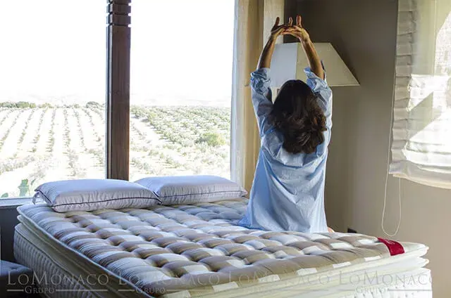

El dolor de espalda ¿Cómo evitarlo?

El dolor de espalda ¿Cómo evitarlo?
Las posturas inadecuadas pueden dañar a tu espalda. El ritmo de la vida moderna nos obliga, en muchos casos, a una sobrecarga excesiva de trabajo y a adquirir posturas hiperforzadas en el mismo. Pero fuera del trabajo, también realizamos movimientos que, sin apenas percatarnos, fomentan la aparición lenta y paulatina de dolor en nuestra espalda.
Adoptar posturas inadecuadas puede dañar tu espalda.
La adopción de posturas inadecuadas y la realización de esfuerzos bruscos son las causas más habituales de estos achaques. Si bien no son las únicas. Darse cuenta a tiempo del dolor de espalda y poner remedio está en nuestras manos. Siguiendo unas sencillas pautas de higiene postural podemos evitar la aparición de patologías de la espalda o retrasar y paralizar sus secuelas cuando ya se han dado.
¿Todos los dolores de espalda son iguales?
Los problemas de espalda son sensaciones desagradables que merman nuestra actividad hasta el punto de llegar a paralizarnos. Estudios recientes indican que el 48 por ciento de los españoles sufre dolores de espalda y de ellos uno de cada 4 de forma habitual.La espalda es el tronco central, el ecuador de nuestro cuerpo, la parte que une cabeza y cerebro y las órdenes que éste da a las extremidades u órganos generadores del movimiento. Es el punto de apoyo fundamental del cuerpo, en el que se localiza gran cantidad de estructuras óseas, musculares y nerviosas. La alteración de cualquiera de estos órganos puede ser responsable de una de las molestias más frecuentes en la población.
La realización de posturas o movimientos inoportunos, por lo general de manera inadvertida, son los motivos más habituales de que muchas personas, en un momento u otro de su existencia, hayan sufrido dolor de espalda. Es por eso que se deben seguir una serie de pautas de higiene postural o del descanso con el fin de paliar el malestar propio de una enfermedad o dolencia puntual de esta parte tan importante de nuestro cuerpo.
El dolor de espalda no es siempre de la misma naturaleza, porque puede proceder de los huesos que forman la columna vertebral, de los músculos que la cubren o puede iniciarse en las articulaciones que hay entre las vértebras. Hay patologías originadas por una afección de la columna vertebral pero también otras que pueden provenir de una enfermedad de algún órgano del tórax o del abdomen. Son sumamente frecuentes y afectan a dos regiones específicas: el raquis dorsal o parte posterior de la caja torácica y el raquis lumbar o parte baja de la misma (detrás de las vísceras abdominales). Algunas de estas alteraciones tienen un origen congénito, adquirido, inflamatorio, traumático, infeccioso, digestivo, endocrino, tumoral o nervioso.
¿Cuáles son los problemas más comunes de la espalda?
A pesar de que dichas dolencias estén extendidas entre la población, no cabe trivializar la cotidianidad de su visión. No en vano, entre otras secuelas puede afectar a la actividad diaria y al rendimiento laboral. Además puede provocar depresión, trastornos de ansiedad y fatiga.
La mayor parte de las patologías relacionadas con la espalda y sus dolencias se registran en la parte baja de la espalda (raquis lumbar), como la hernia discal o la lumbalgia, llegando a irradiar su dolor a otras partes cercanas, es el caso de la ciática. Y no siempre el dolor se presenta de forma inevitable desde el principio, como la artrosis que es indolora durante mucho tiempo.
En cuanto a la edad en que pueden aparecer los primeros síntomas de un problema de espalda, varía mucho dependiendo de diversos factores (hábitos, predisposición genética), como ya se ha comentado, si bien se estima que entre los 30 y 40 años puede diagnosticarse.
Entre otras múltiples enfermedades:
La artrosis es más frecuente a partir de los 40 y está originada principalmente por el levantamiento de cargas pesadas y las malas posturas. Afecta a las articulaciones que se encuentran detrás de las vértebras y se evidencia por la adquisición de una postura arqueada y la dificultad en la marcha.
La artrosis puede acarrear ciática, una patología muy extendida, sobre todo a partir de los 30 años, y que conlleva hormigueos y dolor en nalgas, muslos, piernas y pies. Está relacionada con el envejecimiento de la columna y puede derivar en una hernia discal.
Comparte la hernia discal con la artrosis la sensación de un dolor intermitente derivado de un esfuerzo. La hernia surge del desgaste del disco intervertebral o núcleo gelatinoso que se haya entre las vértebras.
Otro tipo de dolor más prolongado o repetitivo es el ocasionado por la lumbalgia. Al igual que los casos anteriores, surge al realizar actos que impliquen esfuerzo. La lumbalgia proviene de la deshidratación, envejecimiento y adelgazamiento de los discos intervertebrales.
Del mismo modo, genera dolor agudo la osteoporosis. Es la desaparición del tejido óseo en que se fija el calcio. El hueso se descalcifica y se vuelve frágil sin apenas doler hasta que se fisura o fractura. Entre las causas de esta patología, está demostrado que puede derivarse de enfermedades endocrinas (tiroides, hipófisis), tratamientos con cortisona, enfermedades genéticas y en mujeres a partir de la menopausia.

¿Cómo se puede prevenir el dolor de espalda?
Gran parte de las lesiones de espalda son causadas por la realización constante de posturas incorrectas y el mal levantamiento y transporte de cargas, tanto en el trabajo como en las actividades de la vida diaria. Los problemas de la espalda se pueden prevenir, en la mayoría de los casos, aplicando diariamente unas normas generales de higiene postural tanto durante la jornada laboral como en el descanso y en las actividades recreativas y deportivas.
Entre otras normas, la adopción de posturas correctas y la realización de ejercicios de forma regular para fortalecer la espalda y evitar la aparición de dolores y lesiones, son algunas de las más importantes. Proteger la espalda, cambiar hábitos o movimientos que puedan generar dolor, dormir en un colchón de dureza intermedia, ni duro ni blando, de muelles sólidos o de látex y apoyado sobre una base firme, usar una almohada mediana debajo de la cabeza y dormir boca arriba o adoptando una posición fetal son otras de las pautas que se unen a las ya mencionadas.
Consejos importantes para evitar problemas de la espalda
- Sentarse manteniendo la espalda recta en una silla que tenga el respaldo recto y firme, y con los pies apoyados en el suelo o en un reposapiés.
- Al estar de pie, conservar la espalda recta, las manos por delante del cuerpo y apoyar un pie por del otro.
- Caminar, manteniendo el tronco recto, la mirada al frente y acompañar con movimientos suaves de cadera y brazos, desplazando primero el tronco y después el cuerpo.
- Cuando recoja un objeto, doble las piernas conservando las espalda recta y el abdomen hundido. Deben ser las piernas, más que la espalda, las que hagan el esfuerzo. Para transportar la carga, manténgala más debajo de su cintura y contra usted.
- Nunca levante objetos muy pesados o voluminosos que no pueda agarrar con facilidad, emplee una ayuda mecánica o pida ayuda. Esté seguro que puede mirar por encima o por un lado de la carga. Nunca gire la cintura mientras sostiene una carga muy pesada.
- Cuando un objeto esté por encima de su cabeza, utilice una escalera para alcanzarlo, un banquillo o escalera firme, que no generen riesgo de caídas. Pida ayuda cuando el objeto sea pesado o voluminoso.
- Al subir escaleras, hágalo despacio, manteniendo la espalda ligeramente inclinada hacia adelante.
- Cuando se vista, sea prudente al flexionar el tronco hacia delante. Si es necesario, utilice una silla.
- Al dormir, duerma de lado con las piernas encogidas o mirando hacia arriba. No use colchones muy duros ni muy blandos. La almohada debe tener una altura adecuada para mantener el cuello recto.
- Cuando se levante de la cama, gire sin doblarse para ponerse de costado. Doble las piernas y ponga los pies en el suelo, enderécese apoyando la mano.
¿Cuáles son los tratamientos más beneficiosos?
Las acciones terapéuticas más habituales para corregir los dolores de espalda son las médicas, seguidas por un cambio de hábitos y mejoras en el descanso, la cirugía y la medicina alternativa. El reposo en cama y la administración de analgésicos es el tratamiento habitual en pacientes con enfermedades crónicas como las indicadas. Pero dependerá de la patología que se atienda el establecer el más idóneo.
Se recomienda no repetir el movimiento que cause el dolor, llegando a plantear seriamente al paciente la supresión del gesto en concreto. El calor es fundamental en casos como la hernia discal y la ejercitar de los miembros dañados sin llegar a sentir dolor. De cualquier modo, todo tratamiento debe ser llevado a cabo bajo supervisión médica para establecer el método a seguir.
Fuera del ámbito médico, hay diversas tendencias de la medicina alternativa que plantean la utilización de la acupuntura, homeopatía, oligoterapia o naturoterapia, como otros remedios a tener en cuenta.
Otras recomendaciones para cuidar la espalda durante el descanso
Adquiera una buena postura lumbar.
A veces incluso un estornudo brusco nos puede provocar un dolor de espalda. Aunque las causas pueden ser múltiples, la mayoría de la gente que se queja de dolor de espalda sufre uno de los siguientes síndromes:
Sobrecarga muscular: Se produce cuando los músculos se contraen y relajan muy rápido con los movimientos corporales. Una vez que se relajan, sufren pequeños espasmos que se traducen en forma de dolor. Por tanto, mejora todo nuestro estado en general.
Pinzamiento: Es un desplazamiento hacia fuera de la masa gelatinosa central del disco que une las vértebras de la columna. Este dislocamiento oprime los nervios espinales y nos produce dolor.
Síndrome de las carillas: Son superficies planas que están en las terminaciones del arco de las vértebras. Si debido a un mal giro o de una flexión incorrecta las carillas se dislocan se produce un fuerte dolor.
Pasar demasiado tiempo frente al ordenador tampoco es bueno para la salud. Si se trabaja más de cuatro horas diarias ante un ordenador será raro que al cabo de algunos años no desarrolle algún tipo de afección en el aparato óseo-muscular.
Sin duda que el mejor remedio es reducir las horas de trabajo frente al ordenador, pero, si no hay otra opción, la mejor solución al alcance es hacer pausas frecuentes y aprender a usar adecuadamente esta herramienta de trabajo.
Recupera el equilibrio tras las tensiones.
La fortaleza o debilidad de éstos se va forjando a lo largo de los años. Por ello mantener unos buenos hábitos alimenticios toda la vida es crucial para que éstos se conserven en perfecto estado. Si hoy llevamos un estilo de vida saludable mañana gozaremos de una buena estructura ósea.
Lo mejor para empezar a prevenir esta enfermedad es alcanzar un buen nivel de masa ósea al llegar a la madurez esquelética, que ronda los 30-35 años, ya que a partir de entonces viviremos de las rentas de esta masa ósea acumulada.
Una ingesta adecuada de calcio y el ejercicio físico durante la adolescencia y la juventud puede incrementar el pico de masa ósea, lo cual redunda en una reducción de la pérdida de hueso y en un menor riesgo de fractura en años posteriores.
Dolores lumbares
Ejercicio para evitar el dolor de espalda.
El dolor de espalda es, en todo el mundo occidental, uno de los problemas más importantes que afectan a la población en general. Durante muchos años, la espalda está sometida a un estrés que inicialmente puede no traducirse en dolor.
El lumbago es uno de los dolores de espalda que se presenta con más frecuencia debido a las malas posturas del cuerpo y los esfuerzos excesivos. Se localiza en la zona baja de la columna vertebral (a la altura de los riñones) y se puede prevenir o incluso aliviar de manera natural si se tienen en cuenta algunos consejos prácticos. Pero cuando el lumbago se presenta de manera aguda, es necesario realizar una consulta al médico para evitar males mayores.
Para evitar el dolor de espalda es recomendable hacer ejercicio o, en todo caso, mantenerse físicamente activo, evitar el sedentarismo, adoptar una actitud mental valiente ante el dolor y cumplir las normas de higiene postural destinadas a realizar las actividades cotidianas de forma que la espalda soporte la menor carga posible.
¿Padece tensión lumbar?
Yoga para mejorar la salud de tu espalda.
Le propondremos en sucesivos capítulos unos ejercicios fáciles de yoga con los que aprenderá a liberar la espalda de las tensiones que producen las malas posturas.
Siempre es momento para vigilar el buen estado muscular de nuestra espalda, una zona corporal que suele acusar mucho la inactividad o el exceso de horas en posturas poco convenientes. Y ocurre que, a veces, este resurgir que trae consigo el buen tiempo, provoca que todas las molestias ocultas durante el invierno se hagan notar más. Una buena manera de recuperarlas es con la práctica del yoga.
Realizar los siguientes ejercicios proporciona descanso y relajación, ayuda a corregir los malos hábitos posturales y a dar más flexibilidad a la espalda. Por tanto, mejora todo nuestro estado en general. En este número comenzamos con:
Abdominales y lumbares fuertes
Postura uno: Tumbado boca arriba con los brazos a los lados y las piernas juntas y estiradas, saque el aire y a la vez, lleve las rodillas hacia el pecho, de manera que los talones se dirijan hacia las nalgas.
Postura dos: Coja aire y estire las piernas hacia arriba en un ángulo de aproximadamente 60º. La zona lumbar ha de estar siempre pegada al suelo. Repita el ejercicio aproximadamente 10 veces.
Dolor de espalda en los niños
Las mochilas muy pesadas dañan la espalda
Comenzamos la etapa escolar en la que los pequeños llevarán su material escolar en mochilas muy pesadas. No es de extrañar que el dolor de espalda en los niños aparezca a partir de los 12 años, que en la mayoría de los casos se trata solamente de dolores musculares, es decir la columna vertebral no presenta ningún problema. Factores como los siguientes aumentan claramente el riesgo de que el niño pueda sufrir dolor de espalda:
Falta de ejercicio: Si los músculos no están bien entrenados el dolor de espalda será más frecuente y durará más y si estos son más fuertes serán menos sensibles a una posible sobrecarga. Inadecuada práctica del deporte. Hay entrenamientos deportivos que pueden causar desequilibrios en los músculos que afectan el funcionamiento de la espalda. Algunas enfermedades de la columna como la escoliosis, hiperlordorsis. pueden provocar en el niño dolor de espalda.
Si se trata de un dolor muscular causado por lo visto anteriormente es muy importante que conciencie a su hijo para que siga unos hábitos saludables, pero en cualquier caso debe consultar a su médico para que le haga un diagnóstico del origen del dolor.
Su colchón y su almohada son más importantes de lo que usted piensa para la salud de su espalda.
Los dolores de cabeza, de espalda y tortícolis pueden ser producidos debido a que la tensión en los músculos se agrava con frecuencia por una postura incorrecta durante el sueño, especialmente cuando el colchón fuerza a la espina dorsal a adoptar posiciones antinaturales.
Si el cuello y la espalda no reciben un soporte adecuado, los músculos se estiran mientras descansa, pudiendo ser causa de dolores y rigidez.
Para evitar o disminuir dicho dolor se pueden y deben tomar varias medidas:
Posturas: A La hora de dormir, evitaremos hacerlo bocabajo, e intentaremos hacerlo boca arriba, con una almohada bajo los pies para favorecer la circulación, y otra bajo la zona cervical. O de lado, con una almohada bajo la cabeza y otra entre las rodillas, siendo bueno en esta posición ir alternando de lado para que el hombro sobre el que nos apoyamos no sufra en demasía.
Movimientos: Para levantarse de la cama, gire para apoyarse en un costado y, ayudándose de los brazos, incorpórese de lado hasta sentarse. Al agacharnos a por algún objeto, independientemente de que sea pesado o liviano, flexionaremos las rodillas en lugar de la espalda, disminuyendo así la tensión muscular que se genera en la zona dorso-lumbar, ayudando a evitar posibles lesiones que suelen producirse en estos casos.
Sentarnos: La postura que adoptamos a la hora de sentarnos es también un factor muy importante en cuanto a la generación de dolor lumbar se refiere. Buscaremos así una silla con adecuado apoyo lumbar y dorsal que nos permita descansar la musculatura, la cual está en tensión la mayor parte del día.
Horas de sueño: Por último y no menos importante, está el hecho de descansar el tiempo necesario y de manera correcta, lo cual se consigue con un colchón adecuado que nos ayude a descansar y relajar la musculatura paravertebral. Duerma sus horas regularmente. Trate de ir a la cama a la misma hora todas las noches y levantarse a la misma hora cada mañana, incluso los fines de semana.